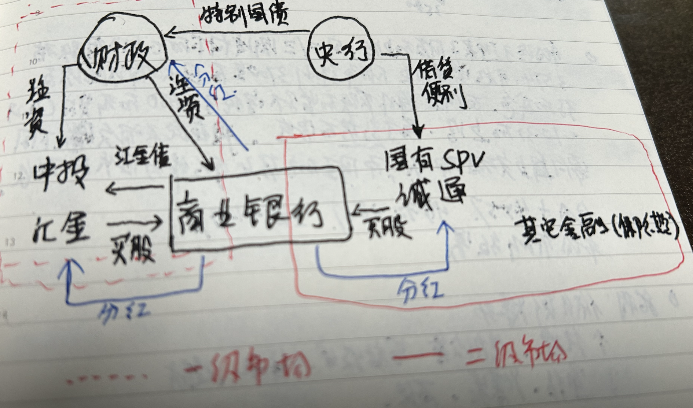
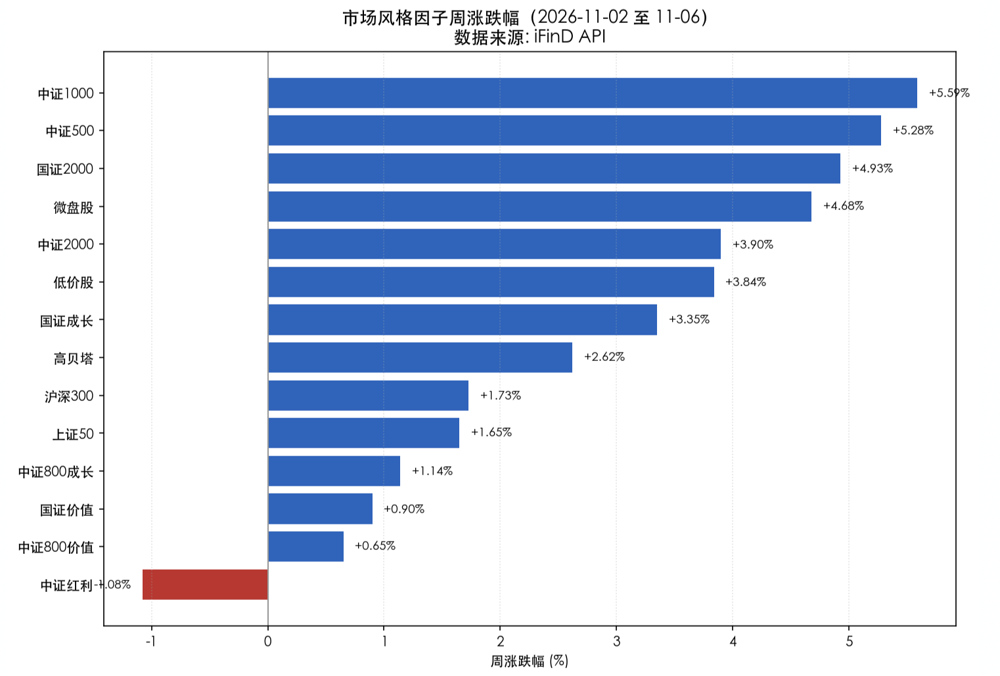
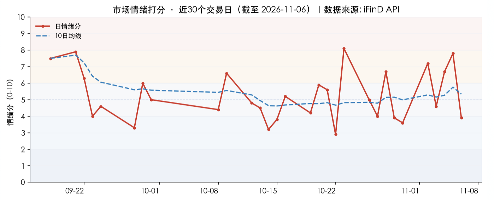
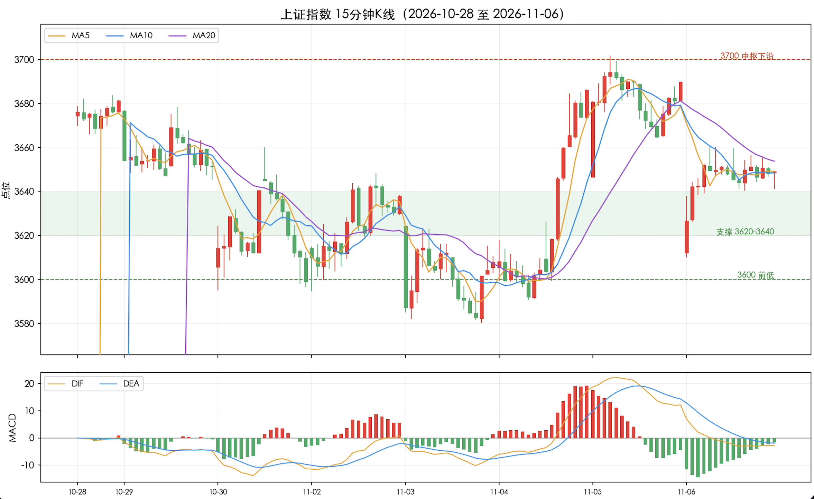

投资备忘20261107-银行股是什么样的存在
2026-11-02 — 2026-11-07 · W45 · 周度备忘
本周的市场确实热闹：先是国内开会，blablabla；市场也给面子，用 2 万亿的成交和摸一下 3700 的成果宣告这个会没白开。然后热闹的是美国中期选举——估计本来没太多的准备，结果出来后不仅指数被闪了腰，板块也走出巨大的分化，光伏储能上天、数据中心入地。这次中期当然很重要，也可能是两年后大选的风向标，并很快产生共和党内部的化学反应，但实际上的短期政策变化估计多虑了，毕竟政治周期之外还有产业、经济的周期。最确定的变化是各位卖方的小伙伴工作量增加了，更好完成年底冲刺。
本周不仅"一直赢"的特朗普滑铁卢，战无不胜的银行股也短期消停。从 2023 年以来银行股就是雷霆走势、吊打其他板块——为什么市场能允许这么牛逼的板块存在？
话题：银行股是什么样的存在？
2023 年春节后至今，中证银行指数上涨 39%，同期的上证指数上涨 13%，中证全指上涨 4%。3 年半的时间银行股用实际的表现吊打其他板块——关键是无论指数下跌的 2023、24 年，还是上涨的 24、25 年，银行股都用平稳的回报率稳步跑赢。这是怎么做到的？
一级市场空手套白狼。几乎所有一级市场的资金要么从央行融资、要么从银行融资，然后注资满足资本充足率要求——既满足了商业银行资本金要求、又增加了控制权，同时还可以通过社保变现，"改稻为桑、两难自解"。

存在两个 bug。一个是分红的确定性、另一个是二级市场银行股股价可能下跌。前者影响套白狼的收益——商业银行并不总是想分红，还需要满足投资和资本充足率的平衡需求；后者在流动性需要卖出银行的时候，会产生较大的亏损。
红必须分。这都不用开董事会——不换脑袋就换人。
二级市场护盘。以前通过汇金在二级市场买入，只要不盯市就不会实现亏损，同时还能获得分红不断摊薄成本。
修补 bug 之后，催化就来了。2023 年之后的股价上涨本质上是口罩之后、增长彻底失速的低利率时代对红利资产的需求，银行完美满足低预期收益资金对稳定收益资产的需求：类 GDP 的增长、产业分散、不乱投资、分红稳定。
央行借贷便利完成最后一块拼图，跟风资金选择跟一级市场的强者通行。银行牛逼了我也牛逼、银行挂了大家都挂——所以他会挂么？
本周市场：放量普涨、结构剧烈分化
本周 A 股放量普涨、结构剧烈分化：指数全线上涨、小盘与题材领涨，但 AI 算力/光模块/半导体高位崩盘，红利/煤炭/石油石化逆势下跌。上证指数周涨 +1.39%，但结构上"小盘亢奋、权重滞涨"：科创 50 周涨 +7.96%、中证 1000 +5.59%、中证 500 +5.28%，显著跑赢上证 50（+1.65%）与沪深 300（+1.73%），呈现典型的"成长/题材普涨 + 红利权重冷落"格局。

1. "AI 算力高位崩盘 vs 新能车/传媒补涨"是本周最核心的结构性对立：费半周跌 -12.15% 传导至 A 股光模块（中际旭创 -19%、新易盛 -12%）、PCB（生益科技 -19%、东山精密 -6.8%），通信行业周跌 -6.40%；而电力设备（+9.33%）、传媒（+13.41%）、计算机（+6.85%）成为资金避险与轮动的承接方向。
2. 美国中期选举"蓝潮"是导火索：民主党横扫参众两院，得州等数据中心重镇"易主"，市场担忧 AI 基建扩张受阻，叠加 Meta 砍单光模块传闻、对冲基金抛售 AI 创历史纪录，引发全球 AI 硬件估值重估。
3. 风格极致切换：上周"高切低"（红利抗跌），本周"低切高"（小盘成长亢奋、红利逆势下跌），中证红利 -1.08% 与中证 1000 +5.59% 形成鲜明对照，资金风险偏好快速回升。
4. 新能车/光伏产业拐点预期：电池、光伏指数四连涨、单周涨超 6%，阳光电源 +25.55%、宁德时代 +9.14%——新能源主线在"蓝潮利好清洁能源 + 产业拐点"双重催化下补涨。
市场展望
宏观：国内的非银行金融机构借贷便利措施可能增强红利资产的吸引力和配置意愿，特别是在不能净卖出的情况下；海外的变化可能带来变化——AI 数据中心的速度慢一点、电力的需求瓶颈突出一点；海外特别是中东可能更复杂，之前的僵局可能会被两种极端情况打破，更大的可能是局势缓和。
市场资金和情绪：本周情绪经历"冲高回落"——从周初 11-02 的 7.2（偏暖）回升至 11-05 的 7.8（偏暖），周五（11-06）骤降至 3.9（偏冷/谨慎）。关键信号是周五市场广度崩塌（上涨占比仅 13.6%、广度 2 分），但全周量能维持高位（6.5 分），说明是"AI 硬件单点杀跌引发普跌"而非系统性缩量阴跌，赚钱效应与情绪在成长主线的剧烈切换中反复。

模式识别（中期）：位置——前期构筑新震荡是基准情形，快速下跌的风险在降低。无论是对比 2022 年还是 2015 年，破位下跌之后会在底部形成两种情形：构筑震荡、V 型反转。这其中的共同点包括：1）构筑震荡的时间长，再次探底的概率越大、越激烈；2）新的震荡区间以上一个中枢的底部为上沿形成较强压制；3）V 型反转需要快速下跌 5%-10%，并开始放量反弹。
模式识别（短期）：经过周五的风险测试，市场构筑震荡结构的概率在增加。这个区间 3570-3700 之间——上沿是 7 月份、10 月份下跌的底，对大盘的压制很硬；下沿是前半周以及更早之前的 3570 的底部区间。

组合备忘
Beta 组合明显上涨，表现跑输市场（市场是指中证全 A +3.3%），Macro 组合明显上涨。本周市场上涨组合同样上涨，但不如整体指数涨幅。Beta 策略本周上涨 **%；Macro 策略上涨 **%。组合仓位提升：Beta 策略仓位 83%，Macro 策略仓位 75%（其中转债 30%）。组合超额收益主要来自机器人和端侧 AI 资产的上涨，低位的消费类资产同样贡献 alpha；HALO 资产本周受到能源下跌的影响，拖累组合；科技类资产承压。
本周操作：仓位提升，结构上红利消费资产下降、科技继续增加。继续在市场情绪性崩盘的阶段买入估值合理、长期空间大的科技资产。
下一步：市场震荡概率增加的基准情形下，结合海外的变化调整组合。组合仓位保持在 85/75 的水平——向上震荡时保持弹性、做交易；出现向下震荡时减红利、增科技；如果大幅下跌的意外情景，跌出超过 5% 考虑逐步加仓。
结构上：科技资产做好分类——有长期空间的科技资产逐步增加、底部加仓的交易型资产利用反弹减仓；红利消费资产有超额收益减仓，HALO 资产根据海外变化调整。
研究：HALO 资产调仓思路、端侧 AI、转债调仓计划。